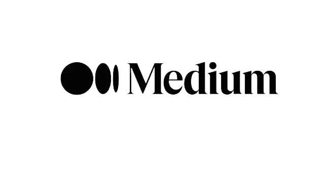

✨Member-only story
Created on Dreamstudio.ai
In my last piece “The Transparent Artist: Music in the Age of AI Disassembly” I explore the threats AI tools, and generative AI music pose not only for artist but for society. A reader left a comment and asked if I had tried Suno.ai which is a music making generative AI engine. I had not, so I headed over to Suno to check it out.
From Suno.ai’s about us page:
Suno is building a future where anyone can make great music. Whether you’re a shower singer or a charting artist, we break barriers between you and the song you dream of making. No instrument needed, just imagination. From your mind to music.
I am inclined to write a 3,000 word think piece just on that, but I’ll spare you for now and focus on my original intent: asking Suno to make me a theme song for a hypothetical podcast - a technology podcast by two Silicon Valley dudes in their 20s - and analyze the result.
Before we dive in, I read Suno’s terms of service, and created a pro account so I could have the ability to share this song with you as we explore it’s weirdness.
Created on Dreamstudio.ai
Inspired by an episode of the podcast Candy Ears titled “AI Experiment #4: Theme Songs with Charlie Harding,” where they created hypothetical podcasts and had Suno generate theme songs, I decided to conduct my own experiment. In the Candy Ears episode, Charlie Harding provided a critique of each AI-generated song. Following a similar framework, I created a hypothetical podcast and asked Suno to compose a theme song. Here’s what I came up with:
Unplugged Minds
The prompt: A 30 second theme song for a technology podcast by two Silicon Valley dudes in their 20's.